3 Cách lấy lại tài khoản Facebook bị hack thành công 100%

Ty Nguyen
CEO ❤️ AhaChat. Love babies & chatbot.
Bỗng nhiên vào một ngày đẹp trời, bạn không thể đăng nhập vào tài khoản Facebook của mình mặc dù đã cố gắng đăng nhập, có thể tài khoản Facebook của bạn đã bị hack. Lúc này bạn đã khá hoảng hốt và lo lắng làm thế nào để lấy lại tài khoản Facebook bị hack? Bài viết dưới đây hướng dẫn cách lấy lại tài khoản Facebook bị hack, đánh tan mọi lo lắng của bạn, đừng bỏ lỡ nhé!
1. Những dấu hiệu nhận biết tài khoản Facebook bị hack
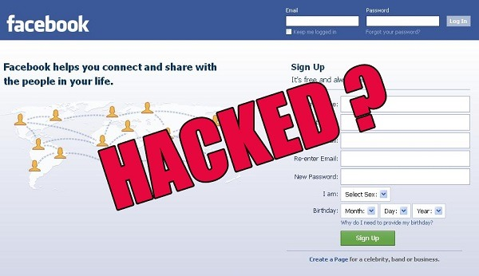
Nhận biết sớm tài khoản Facebook bị hack để có biện pháp bảo vệ tài khoản kịp thời
Nếu bạn gặp phải các dấu hiệu sau thì có thể tài khoản Facebook của bạn đã bị hack:
Email đăng ký tài khoản Facebook bị thay đổi
Tài khoản Facebook bị thay đổi mật khẩu
Tên tài khoản Facebook và ngày sinh trên Facebook bị thay đổi
Tài khoản Facebook của bạn bỗng nhiên đăng tải một số bài viết mà bạn không hề hay biết.
Một số nick Facebook bạn không hề quen biết và không gửi lời mời kết bạn lại trở thành bạn trên Facebook của bạn
Một số yêu cầu kết bạn được gửi đi từ tài khoản Facebook của bạn
Tài khoản Facebook của bạn có một số tin nhắn không xác định được gửi đến các tài khoản Facebook khác.
2. Cách lấy lại tài khoản Facebook bị hack bằng máy tính
Làm thế nào để lấy lại tài khoản Facebook bị hack?
Tuỳ vào từng trường hợp tài khoản Facebook bị hack khác nhau sẽ có cách lấy lại khác nhau. Dưới đây là một số cách lấy lại tài khoản Facebook bị hack mà bạn có thể tham khảo:
Cách 1: Thay đổi mật khẩu Facebook nếu bạn vẫn có thể đăng nhập vào tài khoản
Nếu bạn nhận thấy tài khoản Facebook của bạn bị hack nhưng hacker chưa kịp đổi mật khẩu của bạn thì bạn thật là may mắn. Bởi điều này sẽ giúp việc lấy lại tài khoản Facebook của bạn khi bị hack sẽ dễ dàng hơn.
Với trường hợp này bạn chỉ cần thay đổi mật khẩu của tài khoản Facebook đó và thêm một số thông tin bảo mật cho tài khoản là được. Để thay đổi mật khẩu mới cho tài khoản Facebook đã bị hack, bạn làm theo các bước hướng dẫn sau:
Bước 1: Đăng nhập vào tài khoản Facebook đã bị hack.
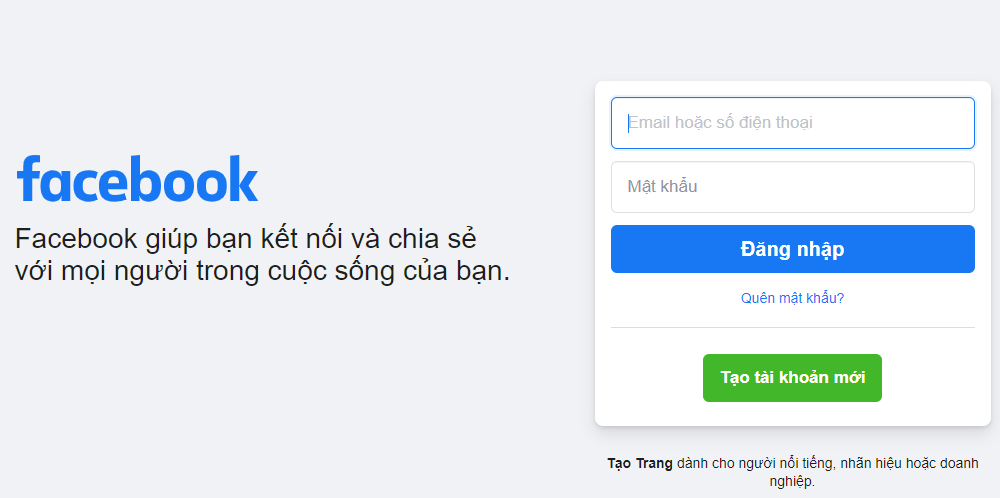
Bước 2: Tại giao diện trang chủ của tài khoản Facebook, bạn bấm vào biểu tượng hình tam giác ngược ở phía trên góc phải màn hình, rồi bấm chọn vào mục Cài đặt.
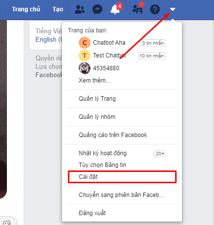
Bước 3: Tại giao diện mục Cài đặt, bạn bấm vào mục Bảo mật và đăng nhập tại menu bên trái. Khi giao diện mới xuất hiện, bạn tìm đến mục Đổi mật khẩu và bấm vào Chỉnh sửa.
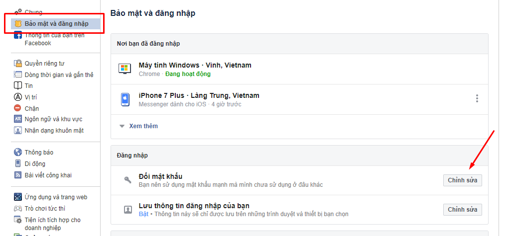
Bước 4: Tiến hành thay đổi mật khẩu bằng cách nhập mật khẩu hiện tại rồi nhập mật khẩu mới.Khi đã nhập xong mật khẩu cần thay đổi, bạn bấm vào Lưu thay đổi.
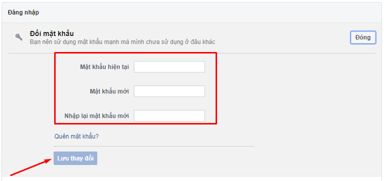
Bước 5: Sau khi đã hoàn tất việc đổi mật khẩu, bạn nên đăng xuất tài khoản Facebook của bạn khỏi tất cả các thiết bị khác bằng cách kéo lên tìm mục Nơi bạn đã đăng nhập sau đó bấm vào Đăng xuất khỏi tất cả.
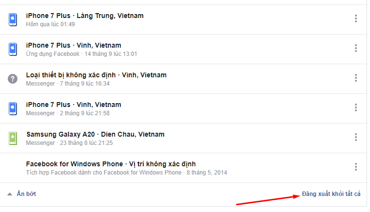
Cách 2: Đặt lại mật khẩu Facebook nếu bạn không đăng nhập được
Trường hợp bạn đăng nhập vào tài khoản Facebook của bạn nhưng không thể đăng nhập được với mật khẩu đã cài trước đó thì bạn cần phải đặt lại mật khẩu ngay lập tức. Bạn nên làm điều này càng sớm càng tốt, ngay lúc bạn biết tài khoản Facebook của bạn bị hack thì nên thực hiện việc reset mật khẩu luôn. Cách thực hiện như sau:
Bước 1: Truy cập vào website facebook.com, tại giao diện đăng nhập tài khoản, bạn bấm vào mục Quên mật khẩu.
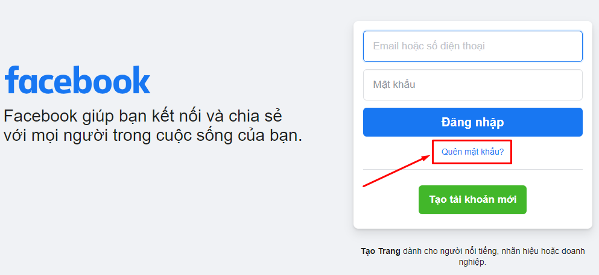
Bước 2: Lúc này, Facebook sẽ hiện ra giao diện tìm tài khoản bằng cách nhập số điện thoại hoặc email liên kết với tài khoản Facebook đó rồi ấn Tìm kiếm.
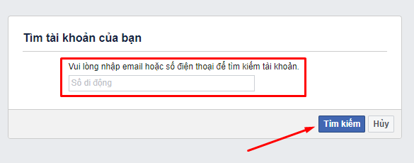
Bước 3: Tiếp theo, Facebook sẽ đưa ra các lựa chọn, bạn cần lựa chọn một trong các tùy chọn đó để đặt lại mật khẩu Facebook
- Sử dụng tài khoản Google của tôi: nếu bạn tích vào lựa chọn này thì cần phải đăng nhập vào tài khoản Google của bạn
- Gửi mã qua email: nếu bạn tích vào lựa chọn này thì Facebook sẽ gửi mã xác nhận đến email của bạn, sau đó bạn dùng mã này để đặt lại mật khẩu Facebook
- Gửi mã qua số điện thoại: nếu bạn tích vào lựa chọn này thì Facebook sẽ gửi mã xác nhận đến số điện thoại đã liên kết với tài khoản facebook của bạn, sau đó bạn dùng mã này để đặt lại mật khẩu Facebook
Sau khi lựa chọn được phương thức đế đặt lại mật khẩu, bạn bấm vào Tiếp tục
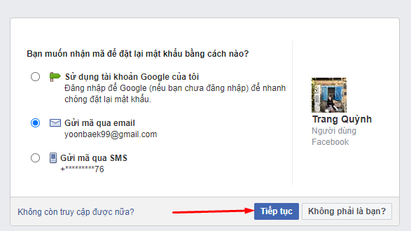
Cuối cùng bạn đặt lại mật khẩu Facebook mới rồi bấm xác nhận là hoàn tất
=>> Xem thêm: Cách lấy lại mật khẩu tài khoản Facebook nhanh chóng
Cách 3: Báo cáo cho Facebook về việc tài khoản của bạn bị hack
Nếu bạn nhận biết được tài khoản facebook của bạn đã bị hack và không có cách nào để đăng nhập được vào đó, bạn có thể báo cáo đến Facebook và thực hiện theo các bước sau:
Bước 1: Bạn truy cập vào website sau để báo cáo với Facebook về việc tài khoản bị xâm phạm
https://www.facebook.com/hacked/
Bước 2: Sau khi đã truy cập vào link trên, bạn bấm vào Tài khoản của tôi đã bị xâm phạm
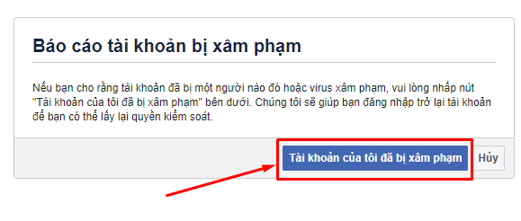
Bước 3: Tiếp theo, nhập số điện thoại hoặc email đã liên kết với tài khoản Facebook bị hack, sau đó bấm Tìm kiếm
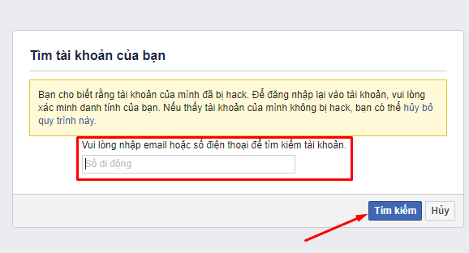
Bước 4: Bạn cần nhập mật khẩu hiện tại hoặc mật khẩu cũ của tài khoản Facebook, sau đó bấm Tiếp tục
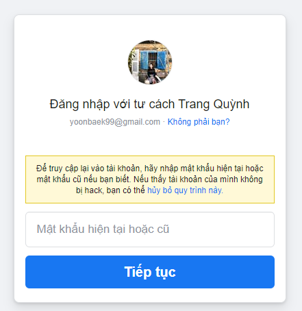
Bước 5: Kế tiếp, bạn bấm chọn Bảo vệ tài khoản của tôi. Sau đó lựa chọn hình thức gửi mã xác nhận qua email hoặc số điện thoại để đặt lại mật khẩu
Bước 6: Làm theo các bước hướng dẫn mà Facebook yêu cầu để nhập mã xác minh. Sau đó, bạn tạo mật khẩu mới cho Facebook rồi xác nhận lại thông tin.
Bước 7: Cuối cùng, bạn bấm vào Get Started để facebook bảo mật tài khoản cho bạn.
Vậy là chỉ với những thao tác cơ bản, bạn đã có thể lấy lại tài khoản Facebook bị hack một cách nhanh chóng, thật đơn giản phải không nào.
Hy vọng với những chia sẻ trên đây đã giúp bạn biết cách lấy lại tài khoản Facebook bị hack cũng như nhận biết được các dấu hiệu tài khoản Facebook bị hack. Trong quá trình thực hiện theo các cách trên, nếu bạn gặp khó khăn cần hỗ trợ thì đừng ngần ngại để lại bình luận ngay mục dưới đây, chúng tôi sẽ hỗ trợ giải đáp cho bạn trong thời gian sớm nhất. Cảm ơn bạn đã theo dõi bài viết của chúng tôi.